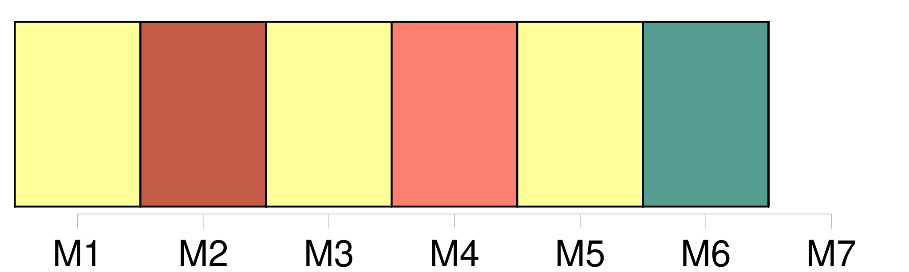

Longueur nb maillons : 6 mentions |
 |
Si le mari refuse d'autoriser sa femme à ester en jugement, le juge peut donner [l'autorisation] [1 phrases]
Si le mari refuse d'autoriser sa femme à passer un acte, la femme peut faire citer son mari directement devant le tribunal de première instance de l'arrondissement du domicile commun, qui peut donner ou refuser [son autorisation] , après que le mari aura été entendu ou dûment appelé en la chambre du conseil. [4 phrases]
Lorsque le mari est frappé d'une condamnation emportant peine afflictive ou infamante, encore qu'elle n'ait été prononcée que par contumace, la femme, même majeure, ne peut, pendant la durée de la peine, ester en jugement, ni contracter, qu'après s'être fait autoriser par le juge, qui peut, en ce cas, donner [l'autorisation] , sans que le mari ait été entendu ou appelé. [3 phrases]
[Toute autorisation générale] , même stipulée par contrat de mariage, n'est valable que quant à l'administration des biens de la femme. [1 phrases]
Si le mari est mineur, [l'autorisation du juge] est nécessaire à la femme, soit pour ester en jugement, soit pour contracter. [1 phrases]
La nullité fondée sur le défaut d' [autorisation] ne peut être opposée que par la femme, par le mari, ou par leurs héritiers. |
|
Il est possible de télécharger la ressource sur la page Ortolang |
Si vous avez des questions ou vous voyez des erreurs, merci d'envoyer un mail à silvia.federzoni89@gmail.com |